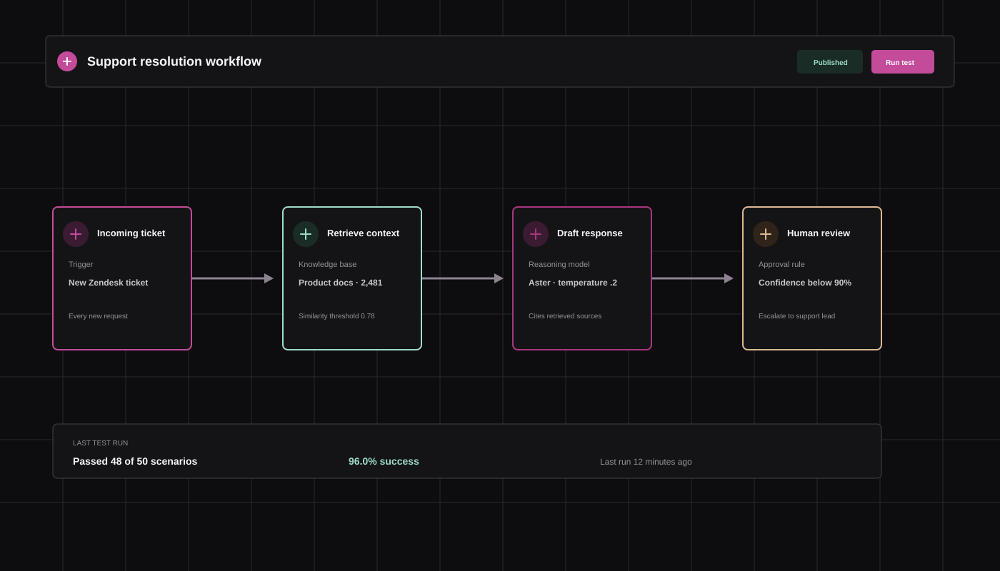
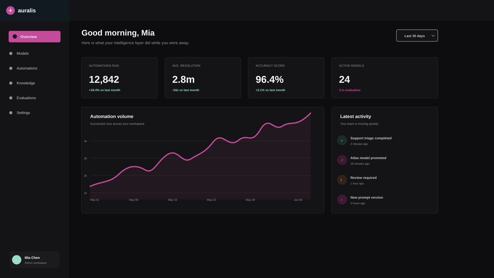
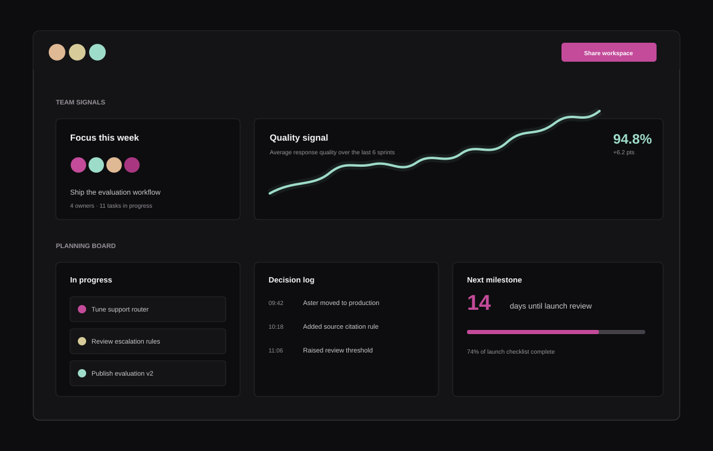

Designed around real work
AI that understands the shape of your business.
Start with a high value workflow, make the result measurable, then let the system grow with the people who depend on it.
Pick your starting point
Different teams. The same need for clarity.
Auralis adapts to your workflow, your sources, and your definition of a useful result.
Support intelligence
Give every agent a sharper starting point.
Ground suggestions in your product knowledge, surface the right policy, and keep a human in the loop where judgment matters.
- Draft responses with source citations
- Summarize long threads in seconds
- Route sensitive cases to specialists

Operations intelligence
Turn repeat work into a system.
Connect the signals your operators already use, then automate the steps that are predictable enough to trust.
- Extract structured data from unstructured work
- Summarize daily operating signals
- Escalate exceptions with context attached

Product intelligence
Ship product decisions with evidence.
Keep customer language, support patterns, and product signals close to the teams deciding what comes next.
- Cluster feedback without losing the raw context
- Compare research themes over time
- Write clearer briefs from real evidence

Research intelligence
Move from question to signal quickly.
Help researchers organize notes, retrieve the right context, and share conclusions with the people who need them.
- Search across approved research sources
- Compare themes across studies
- Preserve provenance for every conclusion
A better default
When the workflow is clear, AI becomes a teammate people can actually rely on.
Start with one workflow. Connect one knowledge source. Measure one outcome. Auralis is built to make that first step feel small enough to take today.
Start with Auralis